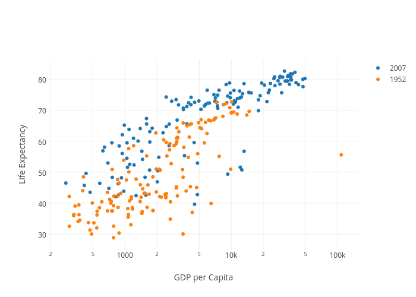
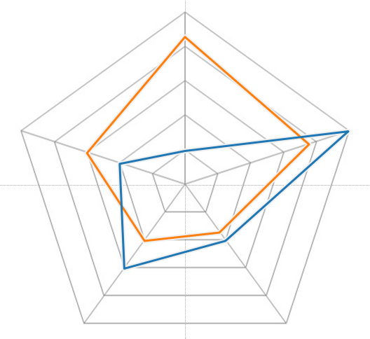
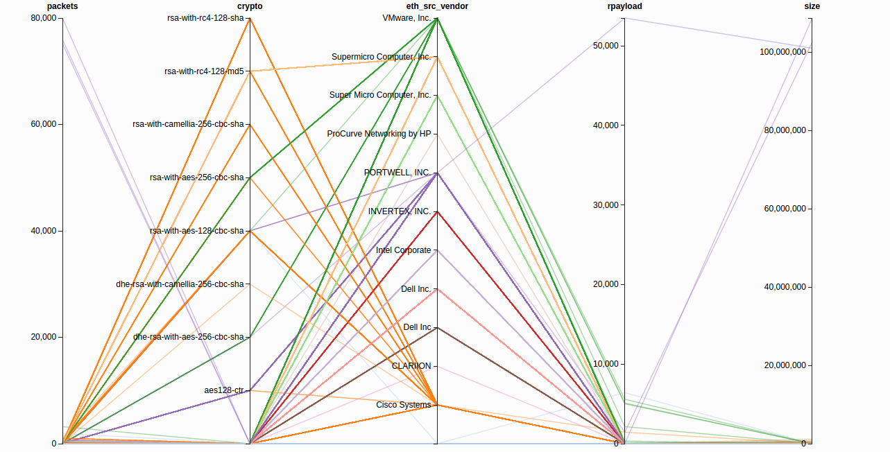
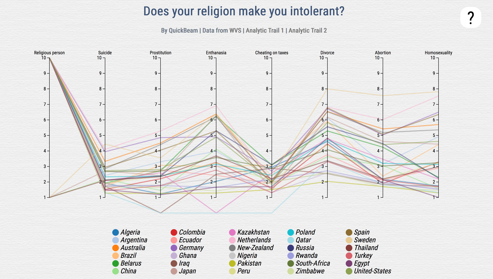

As the data was cleaned up, I started to look for suitable d3 libraries that would help me visualizing the data. I soon realized that 8 variables for 30 countries is a lot, and decided to use a structure that visualizes all the 8 variables and 30 countries in the same time, and in a clear way.
Scatterplot
Radarchart
Parallel Coordinates
I became appealed by the idea of letting the user brush the data and set his/her own search criteria, therefore the choice fell on Parallel Coordinates. I found some non-licensed d3 libraries that I combined in order to create my visualization, and the final result is shown below.
The first variable in the visualization is the statement about whether you consider yourself a religious person or not. The options was basically "Yes" or "No", and a country with a majority of its respondents saying "Yes" is represented with a 10. In the same way, a country with a majority of its respondents saying "No" is represented with a 1.
The following 7 variables concerns the "Justified"-statements, and shows how the respondents of the current countries have answered to what extend they would justify certain dilemmas in life: Suicide, Prostitution, Enthanasia, Someone cheating on taxes, Divorce, Abortion and Homosexuality, where 1 corresponds to "Never justifiable" and 10 corresponds to "Always justifiable". A zero means that the WVS lacks data for that country in that specific variable. The user can brush the different variables and the selected countries are highlighted in the list below.